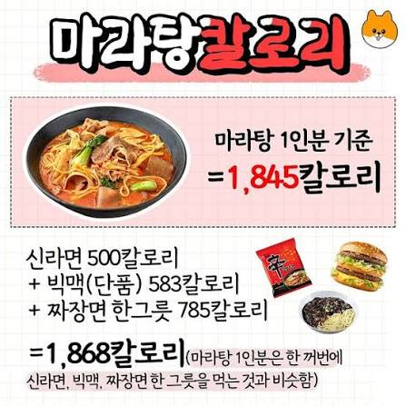
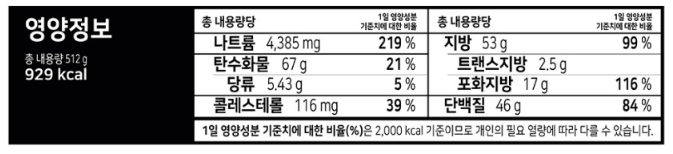
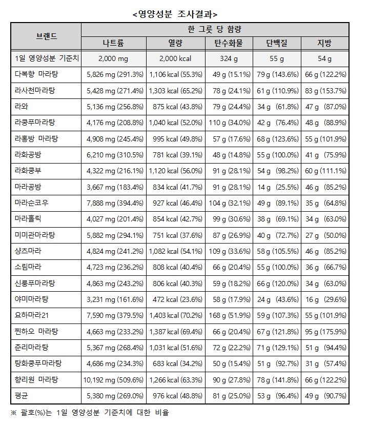
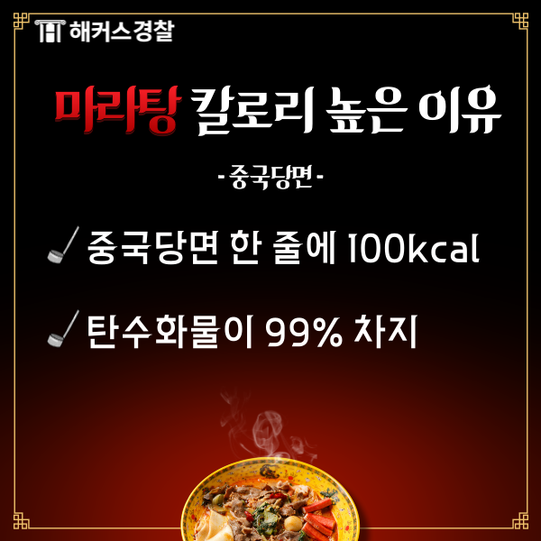
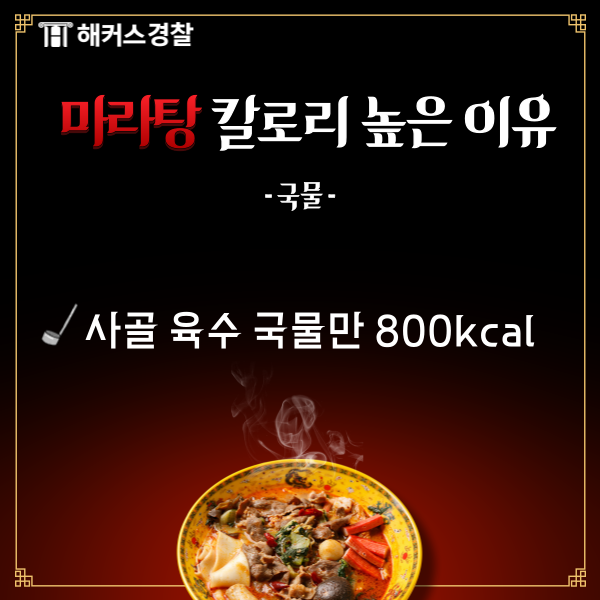
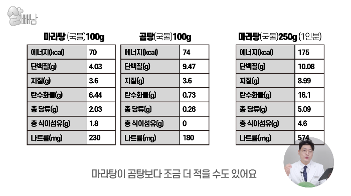

개드립에 이런 식으로 마라탕 칼로리가 1800이 넘는다는 둥 하는 소리가 올라왔음.
https://www.dogdrip.net/726994188

마라탕 1인분이 1800Kcal을 넘는다는게 말이 안되는 이유.
1. 마라탕 밀키트 2인분 기준 929 Kcal.

밀키트 2인분을 혼자서 먹는다고 쳐도 929Kcal니 1800Kcal의 반도 안됨.
2. 연합뉴스에서 한국소비자원 제공으로 공개한 마라탕 영양성분 조사결과 시중 마라탕 음식점들 1인분 칼로리 분석 평균 976Kcal

https://www.yonhapnewstv.co.kr/news/AKR202608101808351eK
제일 높은 요하마라21도 1403Kcal
칼로리 보다도 높지만 그것보다 나트륨 과다를 제일 문제로 삼았고, 지방과 단백질도 과다하다고 지적함.
3. 개드립간 1800Kcal 운운이 주장하는 탄수화물은 오히려 적은 편.

4. 마라탕 국물 칼로리만 800Kcal?


100G당 70 Kcal인 마라탕 국물을 800 Kcal을 먹으려면 국물만 1143G을 마셔야 됨.
할수 있다 나라면!